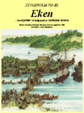

|
Startsidan
Böcker
Dramatik
Kultur-/barnprojekt
Margareta Lindberg |
|

|
|
"Eken - en respektlös susning genom Stockholms historia".
Musikal 2 tim och 50 minuter. Beställningsarbete från Stockholms 750-årsjubileum. Framfördes under jubileumsveckan år 2002 inför fem fullsatta salonger på Stockholms Stadsteaters stora scen. Skådespelare var ett drygt 100-tal barn från olika
Stockholmsskolor med Anne Kulle som regissör. |